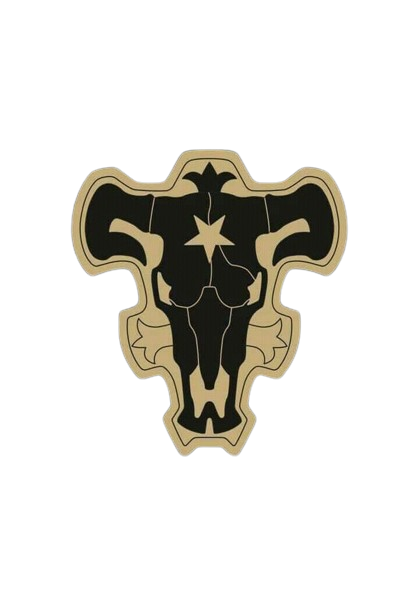

Mereoleona O poder em forma Humana

No arco "Entrada dos Cavaleiros Mágicos" de *Black Clover*, Asta e Yuno participam de um exame rigoroso para se tornarem Cavaleiros Mágicos, enfrentando vários desafios e impressionando os avaliadores com suas habilidades únicas. Ao final do arco, ambos são aceitos em diferentes esquadrões, estabelecendo suas jornadas individuais e rivalidades dentro do universo mágico do reino.
Adicione o resto da analise e mude a imagem troxa